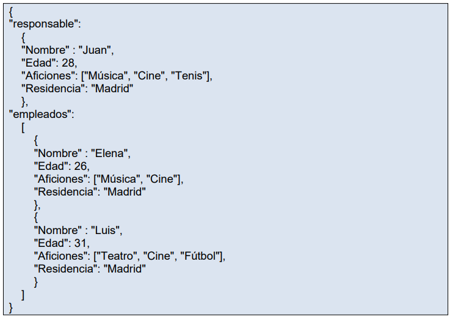
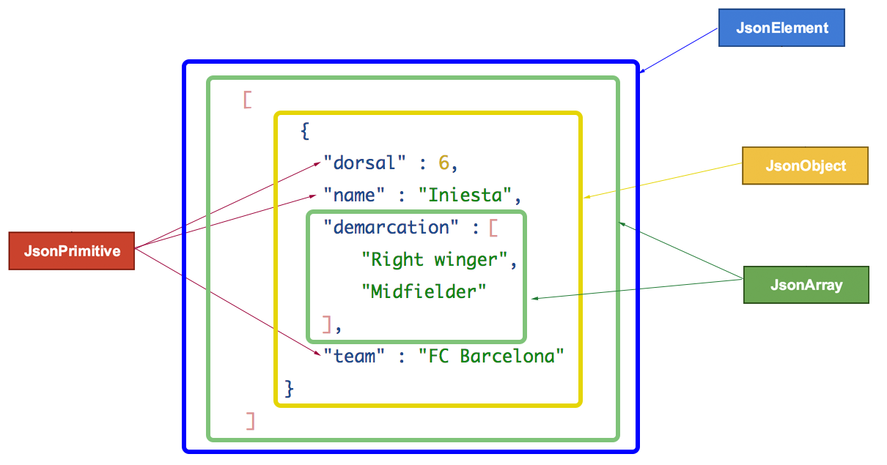

XML fue desarrollado en la década de 1990 por un grupo de trabajo del World Wide Web Consortium (W3C). Fue diseñado como un formato de marcado que permite a los usuarios definir sus propias etiquetas y estructuras de datos, lo que lo hace altamente flexible y adaptable a una variedad de propósitos.
Los tipos de datos disponibles con JSON son: Números: Se permiten números negativos y opcionalmente pueden contener parte fraccional separada por puntos. Ejemplo: 123.456 Cadenas: Representan secuencias de cero o más caracteres. Se ponen entre doble comilla y se permiten cadenas de escape. Ejemplo: "Hola" Booleanos: Representan valores booleanos y pueden tener dos valores: true y false null: Representan el valor nulo. Array: Representa una lista ordenada de cero o más valores los cuales pueden ser de cualquier tipo. Los valores se separan por comas y el vector se mete entre corchetes. Ejemplo ["juan","pedro","jacinto"] Objetos: Son colecciones no ordenadas de pares de la forma separados por comas y puestas entre llaves. El nombre tiene que ser una cadena entre comillas dobles. El valor puede ser de cualquier tipo. Ejemplo:
Al ser JSON un formato muy extendido para el intercambio de datos, se han desarrollado API para distintos lenguajes (por ejemplo ActionScript, C, C++, C#, ColdFusion, Common Lisp, Delphi, E, Eiffel, Java, JavaScript, ML, Objective-C, Objective CAML, Perl, PHP, Python, Rebol, Ruby, Lua y Visual FoxPro) que permiten analizar sintácticamente, generar, transformar y procesar este tipo de dato. Los modelos de programación más utilizados para tratar con JSON en los distintos lenguajes son:10 Modelo de objeto: El JSON completo es almacenado en memoria en un formato de árbol. Este árbol es navegado, analizado y modificado con las API apropiadas. Como lo carga todo en memoria y luego lo procesa este modelo consume muchos recursos. Sin embargo, es muy flexible para manipular el contenido. Este modelo es permitido por ejemplo en Java por la JSR 353 y por la biblioteca Jackson. Modelo de flujo: Los datos son leídos o escritos en bloques. Por ejemplo, cada vez que se lee un bloque, el analizador genera eventos apropiados para indicar el tipo de bloque de que se trata. El cliente puede procesar el contenido escuchando los eventos apropiados. Además, es el cliente el que decide como se va leyendo el JSON permitiendo parar o saltar contenidos en mitad del proceso. El proceso de escritura tiene propiedades análogas. Por ejemplo, este modelo es permitido en java por la JSR 353. Convirtiendo los objetos JSON en objetos del lenguaje. En Java esto es realizado por ejemplo por las bibliotecas Jackson y Gson.
En teoría, es trivial analizar JSON en JavaScript usando la función JSON.parse() incorporada en el lenguaje. Por ejemplo: miObjeto = JSON.parse(json_datos); En la práctica, las consideraciones de seguridad por lo general recomiendan no usar eval sobre datos crudos y debería usarse un analizador JavaScript distinto para garantizar la seguridad. El analizador proporcionado por JSON.org usa eval() en su función de análisis, protegiéndola con una expresión regular de forma que la función sólo ve expresiones seguras.
